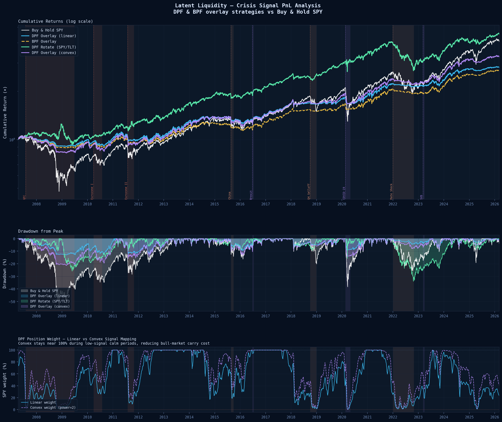
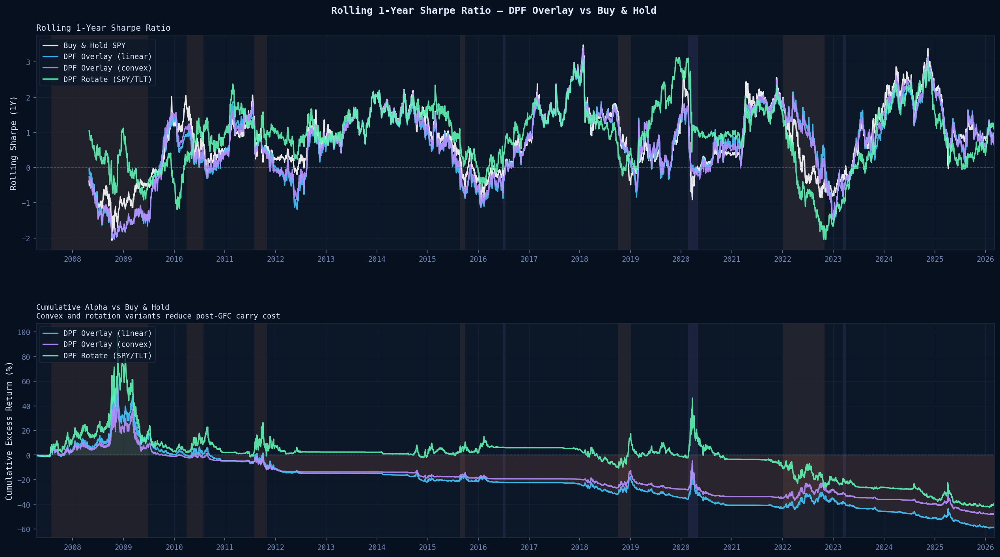
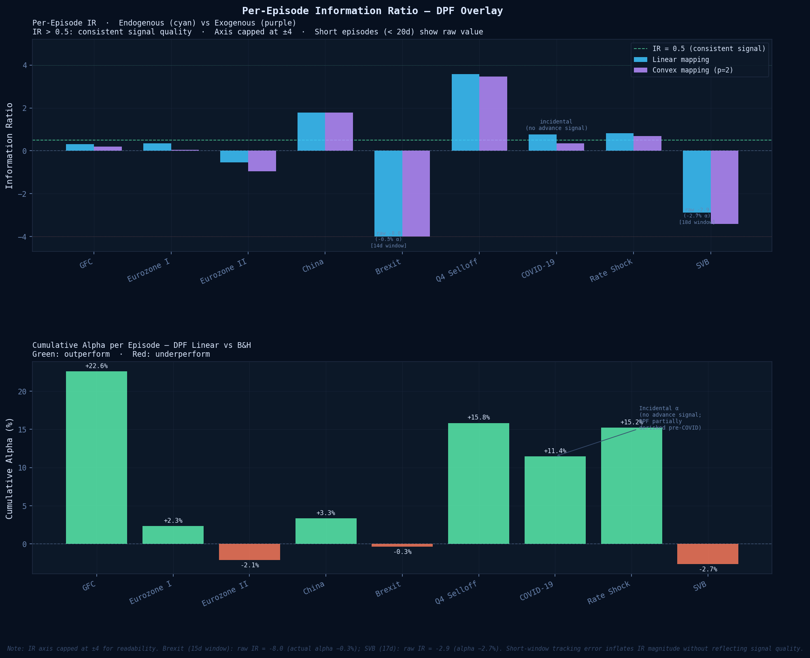

The DPF crisis probability is used as a continuous SPY position overlay — no threshold optimization, all weights lagged one day for strict causality, 1bp one-way transaction cost. Evaluated as a tail-hedge, not an alpha strategy: the goal is drawdown avoidance, not timing rallies.
The crisis probability maps to a SPY weight three ways: linear derisking (weight = 1 − p), a convex power mapping (weight = 1 − p²) that stays near full exposure during low-signal periods to cut bull-market carry cost, and a rotation variant that moves the derisked weight into TLT instead of cash.
| Strategy | Ann. Return | Ann. Vol | Sharpe | Max DD | Calmar | Ann. Turnover |
|---|---|---|---|---|---|---|
| Buy & Hold SPY | 10.3% | 19.7% | 0.52 | −55.0% | 0.19 | — |
| DPF Overlay (linear) | 6.3% | 8.0% | 0.78 | −13.1% | 0.48 | 193% |
| DPF Rotate (SPY/TLT) | 9.5% | 11.6% | 0.82 | −33.9% | 0.28 | 193% |
| DPF Overlay (convex) | 7.4% | 10.2% | 0.72 | −21.4% | 0.35 | 190% |
| BPF Overlay | 5.9% | 7.6% | 0.78 | −15.2% | 0.39 | 386% |
Sharpe t-stat (Lo 2002) ≈ 3.3 for the linear overlay over 4,526 days — but alpha is GFC-concentrated (2008–09 contributes +22.6% of episode alpha alone). Excluding GFC substantially reduces the t-stat. Read this as a tail-hedge profile, not persistent alpha.



| Crisis Episode | DPF Return | B&H Return | Alpha | IR | Type |
|---|---|---|---|---|---|
| GFC (2007–09) | −10.9% | −33.5% | +22.6% | 0.32 | Endogenous |
| Eurozone I | −3.6% | −6.0% | +2.3% | 0.35 | Endogenous |
| Eurozone II | −5.0% | −2.9% | −2.1% | −0.54 | Endogenous |
| China | −2.0% | −5.4% | +3.3% | 1.79 | Endogenous |
| Brexit | +2.6% | +3.0% | −0.3% | — † | Exogenous |
| Q4 Selloff | −2.0% | −17.8% | +15.8% | 3.59 | Endogenous |
| COVID-19 | −8.5% | −20.0% | +11.4% ‡ | 0.77 | Exogenous |
| Rate Shock | −3.9% | −19.1% | +15.2% | 0.81 | Endogenous |
| SVB | +0.4% | +3.1% | −2.7% | — † | Exogenous |
† Short episode (<20 trading days): IR unreliable — tracking error inflated by fast recovery. ‡ COVID alpha is incidental: the DPF had no advance signal; the strategy was partially derisked for unrelated reasons.
A portfolio overlay for dynamic de-risking — tail-risk hedging on existing books, not a standalone strategy.
Directional return generation. Returns trail SPY by design; protection, not timing.
Only nine crisis episodes. Alpha is GFC-concentrated — excluding it sharply reduces the t-stat.
Performance comes from drawdown avoidance, not timing rallies. Read as a tail-hedge, not alpha.